Insights into my UX process for the redesign the Fair Trading website
In 2016, the New South Wales Fair Trading (NFT) agency conducted a state-wide quantitative survey to get insights on how people engage with their online services. NSW Fair Trading is a government agency that safeguards the rights of all consumers and advises business and traders on fair and ethical practice.
The customer survey revealed poor user experience across various part of NFT website ranging from sub-par search experience, convoluted pathways and information hierarchy, and inconsistent interaction behaviour. Out of 200 respondents, over 71% said it was hard to find the information they need. And more than 66% of users think the search results were not helpful which resulted in users calling the Fair Trading directly out of frustration. In turn, the high rate of customer frustration led to the increased of human-hour efforts dedicated to customer service, which often deals with a simple ask.
To comply with the non-disclosure agreement, I have omitted and obfuscated confidential information in this case study. The information in this case study is my own and does not necessarily reflect the views of Boomworks.
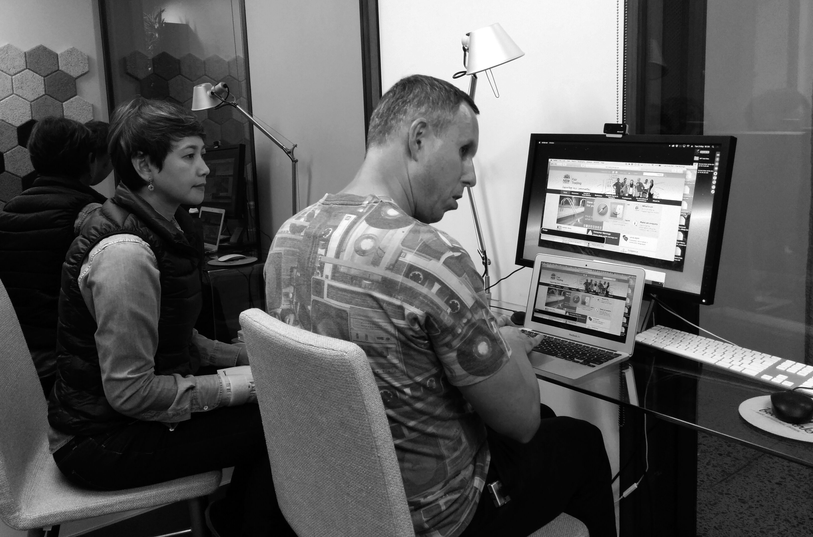
My role
I led the UX design of NSW Fair Trading website across Desktop and Mobile since the outset of the project in April 2016 until October the same year. I worked on this project as a Lead User Experience Designer for Boomworks, a UX design Firm based in Sydney, Australia.
During the engagement, I led the efforts to evolve the online service experience and address customer pain‐points related to the information pathway, search interaction and issues lodgement mechanics.
Customer insights and ideation
I was part of a small team alongside one project manager and two other designers. I partnered with them to uncover insights (by doing field research across NSW), and translate concepts into features that address user behaviour and motivations.
Planning and scope definition
I defined the project approach and methodology, and engaged client stakeholders to get involved early in the process. I evangelised user goals and balanced them with the agency greater vision and mission. I prioritised and negotiated features for launch and beyond.
Experience strategy & vision
I created frameworks and prototypes to share the vision, design principles and content strategy. This helped to evangelise ideas, gain alignment and drive decision-making.
Stakeholders management
I engaged key stakeholders early in the process by way of workshops and collaborative ideation sessions; this helped improve stakeholders ownership toward their shared goals and drive momentum for critical decisions.
Design execution & validation
I designed down using mobile-first approach then expand to the desktop. I overhauled the information architecture organisation (incl. structure, taxonomy and labelling), user journeys, high-level wireframes, prototypes and overall content strategy.
Leadership
I managed up and presented the works to gain buy‐in from executives, senior stakeholders and many other NFT teams throughout the project lifecycle.
The challenge
The NSW Fair Trading approached us to help them excel in the provision of protecting consumers rights against an unfair business practice. This involves redesigning the NFT website and envisioning how we could use the web to empower consumers and educate traders and businesses on fair and ethical practice.
With a three month timeline, we focused on conducting baseline qualitative research to gauge where the existing site failed to alleviate users pain points and deliver better information pathways through better information architecture and contextual content strategy.
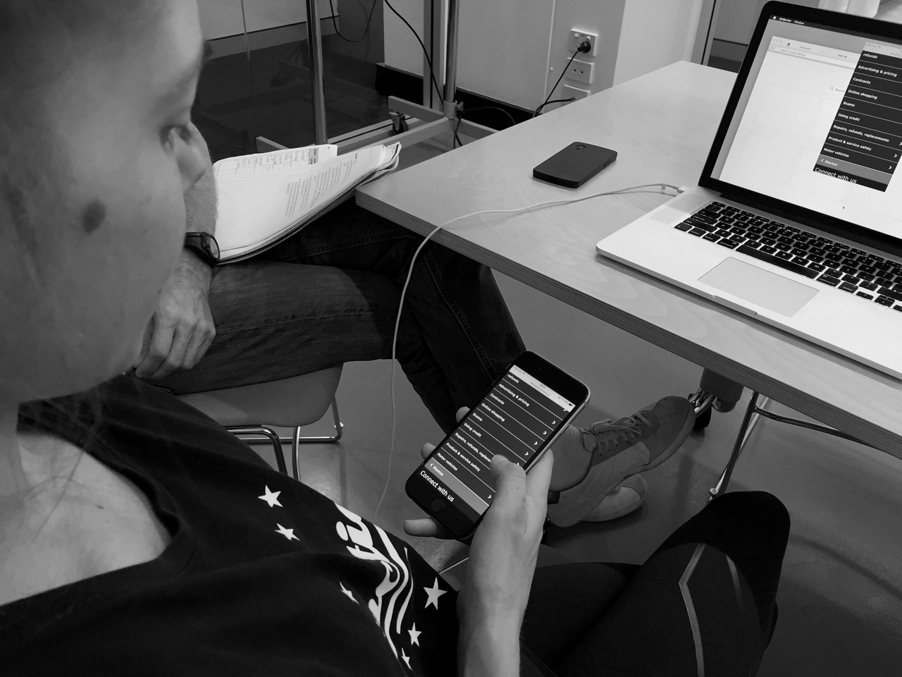
Field research across NSW to benchmark the existing Fair Trading website (photo by Vivid)The approach
NFT user insights
Our lack of domain knowledge in large-scale public service engagement meant we needed to understand the nature of NFT service provision thoroughly and quickly. We approached all aspects of the project collaboratively and spent most of our time with users in the field and working on‑site alongside the NFT team.
We kicked off the project by conducting ethnographic research and used participatory design methods where relevant. This approach was necessary to understand how users get their job done and what frustrates them in the process.
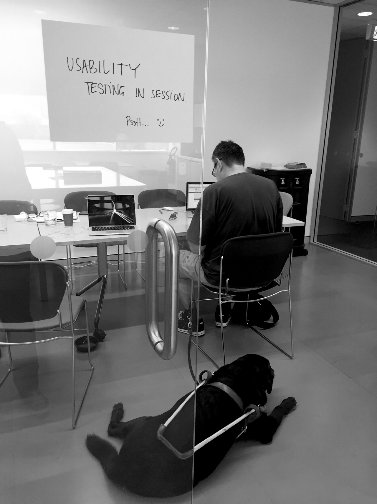
Benchmark testing with visually impaired user (photo by Vivid)To access our prospective users, we visited various NFT service centre across metro and regional areas in NSW and ran usability testing on the existing NFT site to get a baseline mark on where and how the site failed to deliver. We invited various user archetypes during the research including those with visual impairment to understand how the site holds up against accessibility compliance law set for Australian government agencies.
Deep in the literature and lingo
For a more holistic understanding of the wider challenges faced by NFT, I spent a lot of time buried on their site trying to understand the breadth and depth of their services as well as the written lingo used to convey the information.
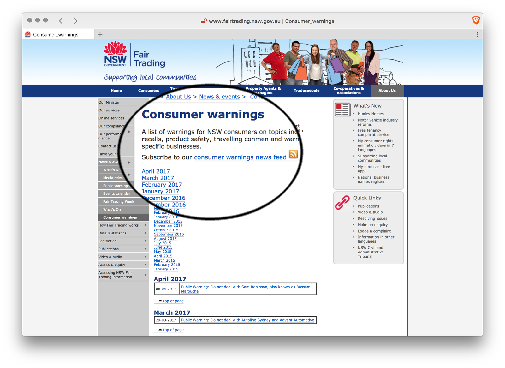
To none surprise but NFT, my research revealed that the site content was written using insider language and unclear information hierarchy. Users find it hard to digest the information and get their job done quickly. On top of that, the site is not designed to support screen reader application (used by visually impaired users) despite NFT claim on the website accessibility rating.
The approach
Insights from our discovery work indicated many areas where a web-based solution could help to improve user experience while interacting with NFT services. We discovered that while NFT often deals in complex information, they should be delivered succinctly in plain English with clear call-to-action.
If we truly wanted to make a difference in delivering great public service we needed to provide contextual solution that consider our users needs relating to:
- simpler mechanic to lodge a consumer complaint
- clear expectation on service time turnaround
- easy access to frequently-used tools
- just-enough information to let users get their job done quickly
These insights began pointing to a better design of information architecture and contextual content strategy.
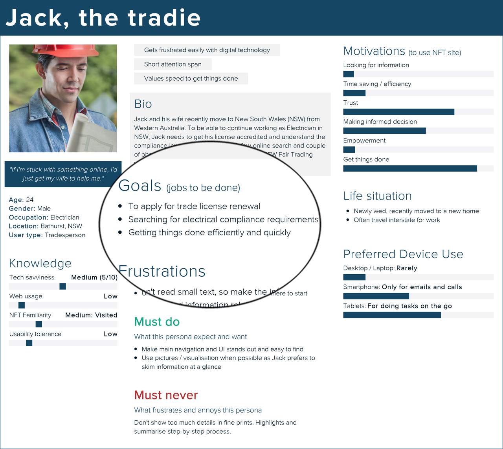
Example of user needs from the primary personas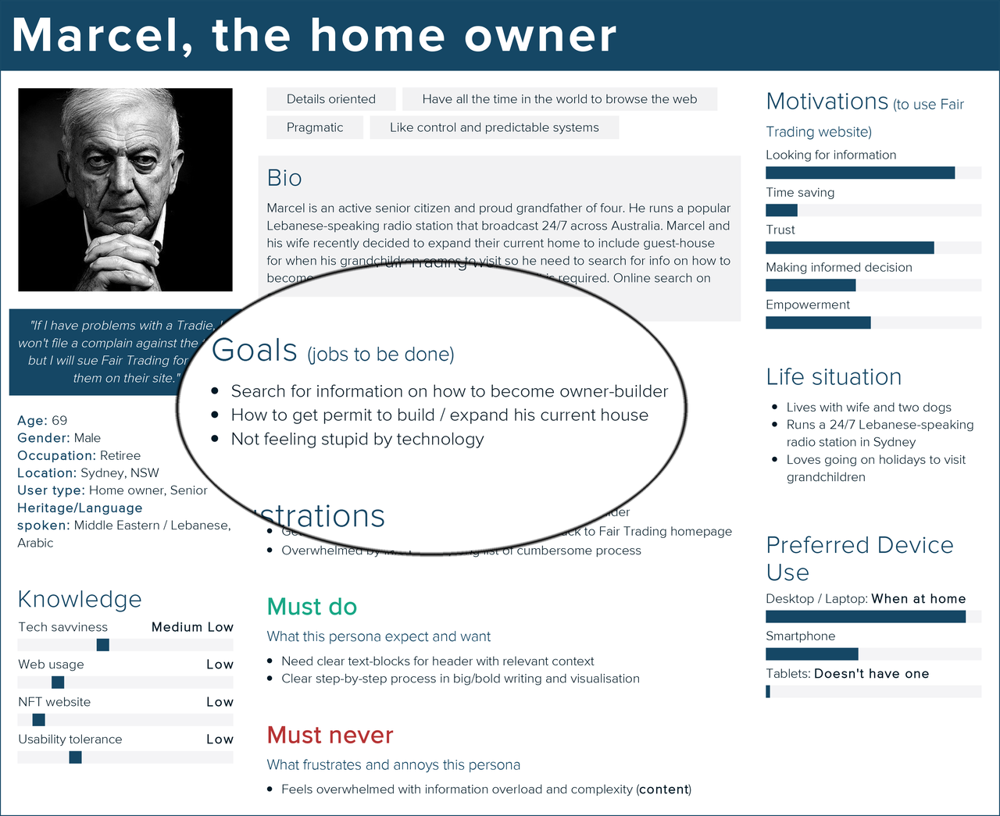
Example of user needs from the primary personasThe vision
Our vision was to create a cleaner online experience that empowers users to access information and engage with NFT services effortlessly.
The requirements
Think big, start small. Move fast.
Although our vision was to create a better web experience NFT users, we discovered there were various internal obstacles (related to organisational politics and government funding) that impacted the development phase to tackle the problem.
Our research highlighted that it was critical for our design to be pragmatic and sensitive to how NFT works and how they aim to serve their users. We knew that if our solutions are not scalable, required upfront budget investment from NFT or didn’t provide enough tangible benefits; it would fail.
Subsequently, we reprioritise our deliverables to enable NFT realise the project in bite-size implementations, which led to us sharpening our problem-solving focus for general consumers who are either time-poor or have low-tech literacy:
- asses NFT information and services quickly
- clear steps to get things done effectively
- better labelling and use easy-to-understand terminology
- transparency on service time turnaround
Technical requirements
We need to ensure that our solutions also cater to the rural audience with a low-bandwidth internet connection. The site analytics also revealed over 69% of users visit NFT sites using Internet Explorer (in various versions) and less than 23% of users accessing the site on mobile due to bad interaction experience.
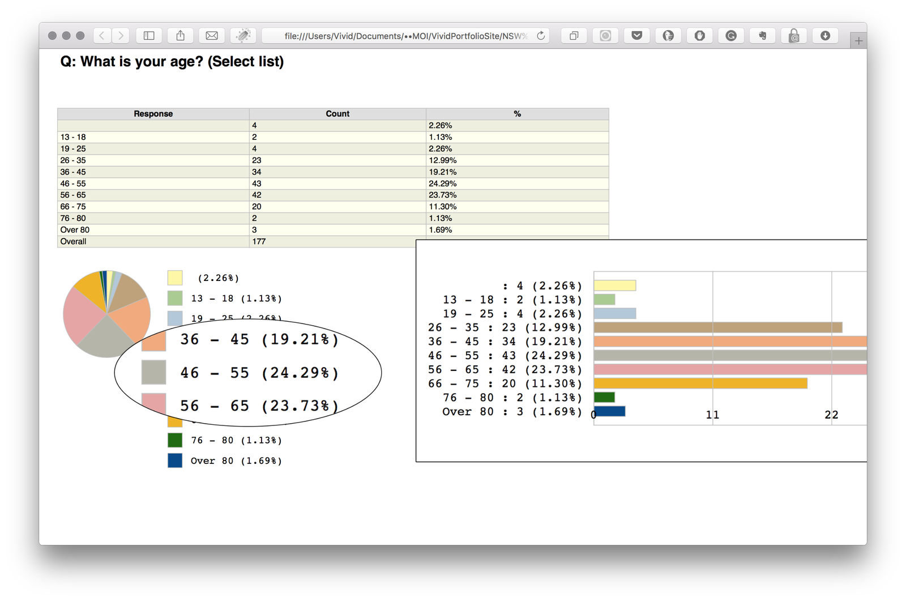
Moreover, NFT online survey shows that over 43% of their users aged between 46 to 65 years old have little exposure to establish web interactions patterns. We embraced these constraints from the get-go and opted to strive for a simpler and accessible solution.
The framework
Organising and structuring content first
We invested lots of time making sense of NFT workflows and existing content before starting any design. This involved heaps of task analysis, content audit and card sorting work.
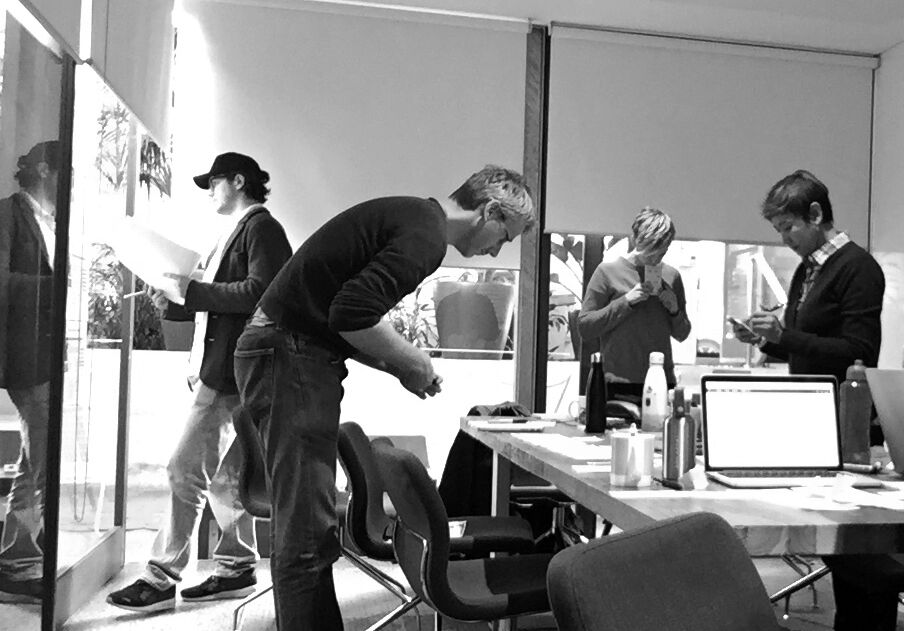
Taxonomy workshop with stakeholdersWe also faced challenges with labelling and terminology on the website that uses ‘insider’ language known only to the NFT staff members and written in complex sentences.
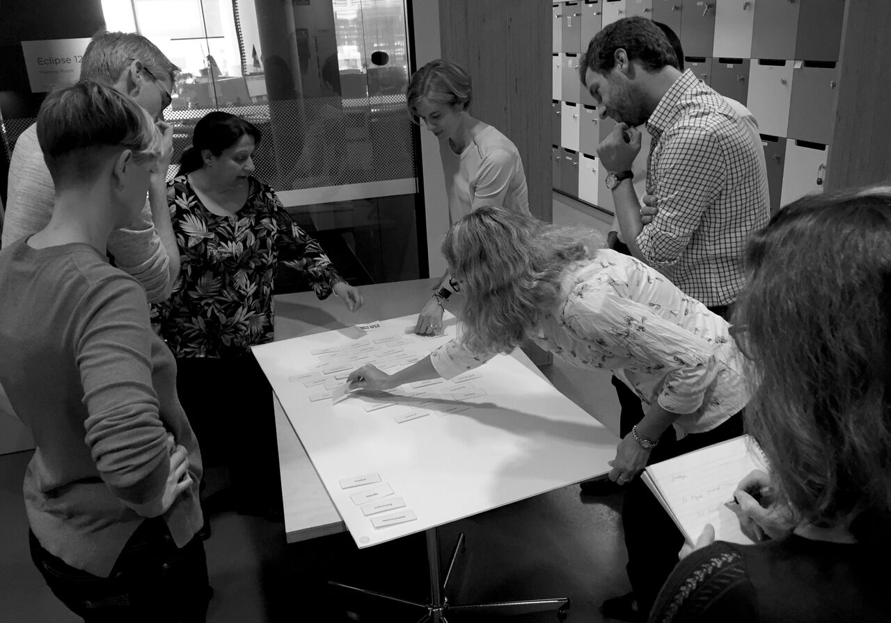
Content strategy workshop with stakeholdersFor this reason, we involved stakeholders while doing the content strategy and taxonomy creation.
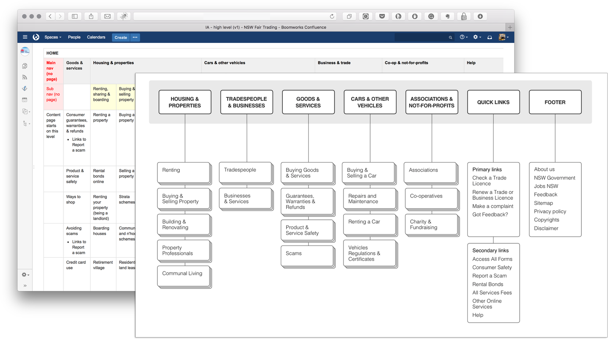
We simplified the Information Architecture (IA) by following the Jobs-To-Done frameworkVisualising information hierarchy and sketching the UI
To help understand the many variety and complexity of NFT services offerings, I mapped the workflow on paper. Doing so helped me get the overall view on how our design could help alleviate user pain points as well as highlights opportunities where we could simplify the interactions and try to innovate.
Instead of doing the heavy lifting digitally when designing the user interface, I opted to sketch my design on paper first. This allows me to rapidly try out few different design alternatives without spending too much time worrying over pixel details. Drafting many concepts beforehand helped me form a broader view of the system earlier to ensure a more cohesive design.
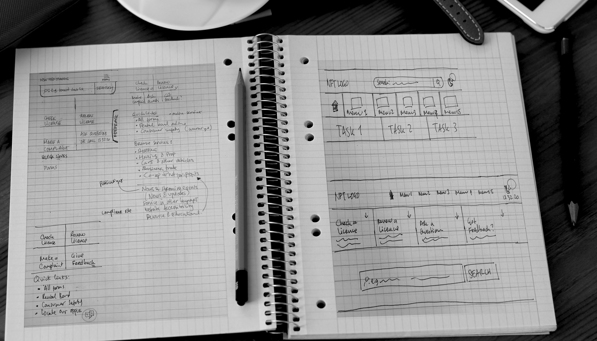
Creating semi high-fidelity wireframes
Once some key UIs have solidly emerged from the nominated paper sketches, I continue the design using Sketch 3 to create sets of detailed mockups. This approach was beneficial in showing our stakeholders the design progress and can be done relatively quickly as the heavy thinking has happened on paper.
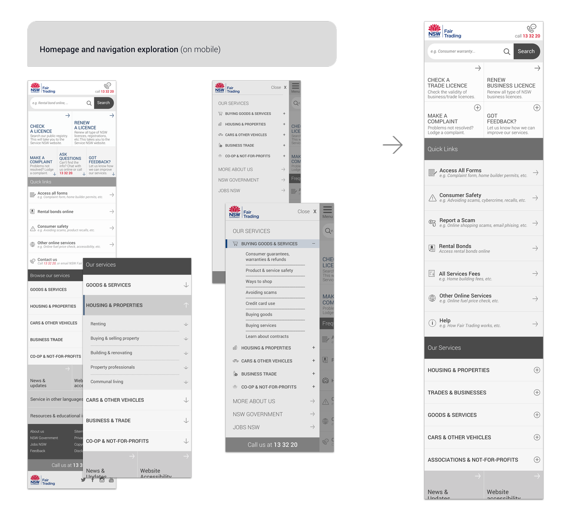
Since the content on the existing NFT site is often written in long paragraphs using complex sentences, I had to spend extra time doing copywriting to demonstrate the information and visual hierarchy on the wires.
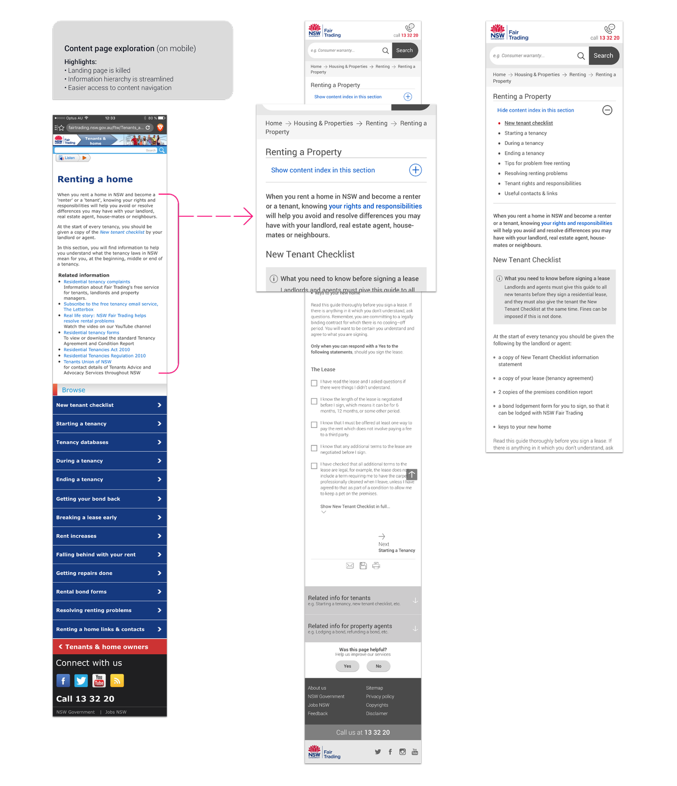
Prototyping and usability testing
Considering the project is rather budget-challenge, we didn’t have the luxury of working with developers to create a working prototype. Instead, we opted to use Marvel App to prototype some fundamental interactions on both mobile and desktop viewports. We put the prototype in front both primary and secondary user groups and iterated the design based on the insights gathered during the usability testing.
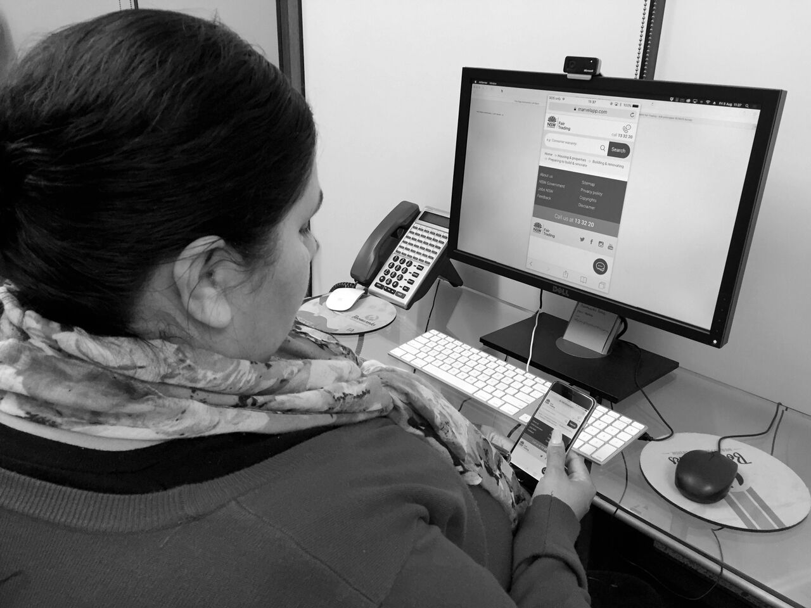
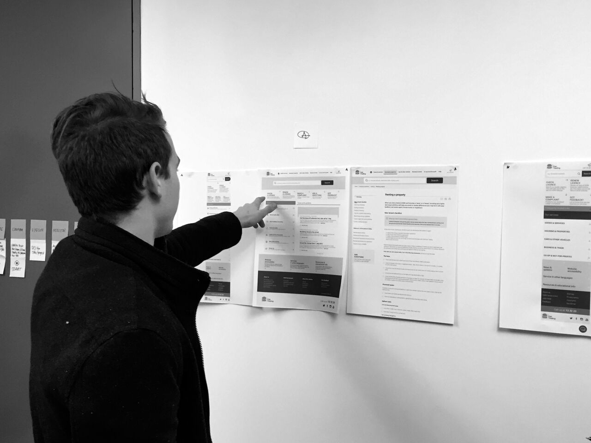
Detailed design
The redesigned NFT site demonstrates simplified navigation organised by topics and then broken down into tasks. This approach highlights the jobs that users wanted to get done rather than grouping the information based on user persona.
The ‘who’ doesn’t matter, it’s all about what task users need to get done.
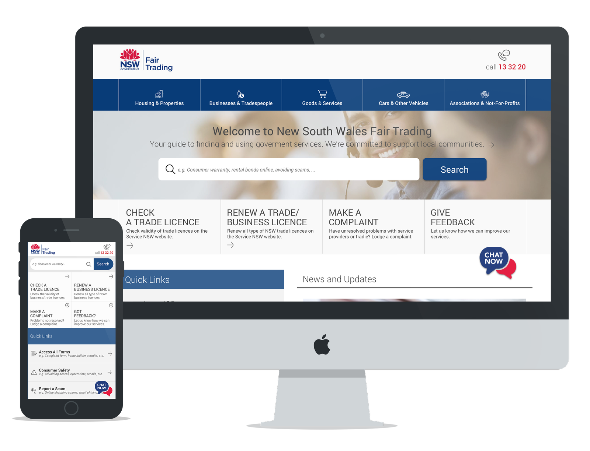
Finding answer quickly through Chatbot
In our observations during the usability testing, we learned that majority of users visited the NFT site with questions that can be replied with a simple, straightforward answer. So on top of the obvious solution, by improving the search experience and interaction, I decided to test an assumption by adding a chatbot to see if users would find it useful when searching for answers.
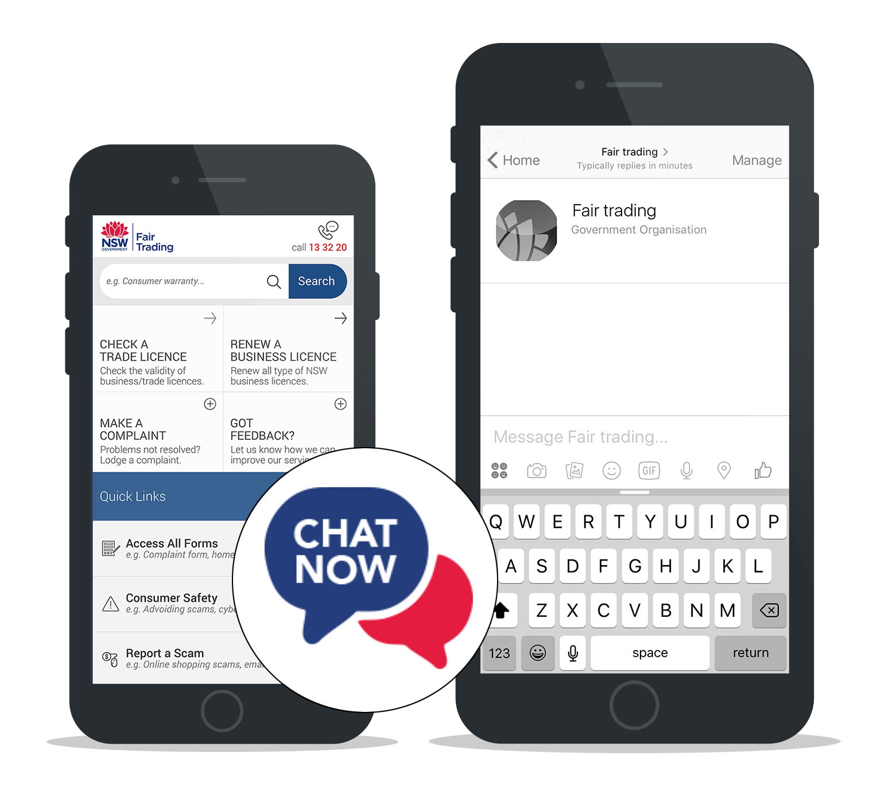
So we added a working chatbot prototype built using our in-house NLU engine (BBX) and trained the AI with some fundamental knowledge from the existing NFT site. To our surprise, users who interact with the chatbot during testing expressed favourable opinions mainly due to the speed of getting the answer they needed.
Serving relevant search results
The prominent search bar on both desktop and mobile viewports encouraged users to utilise it more frequently. This solution especially in favour to those who prefer to search rather than using the navigation for pathfinding.
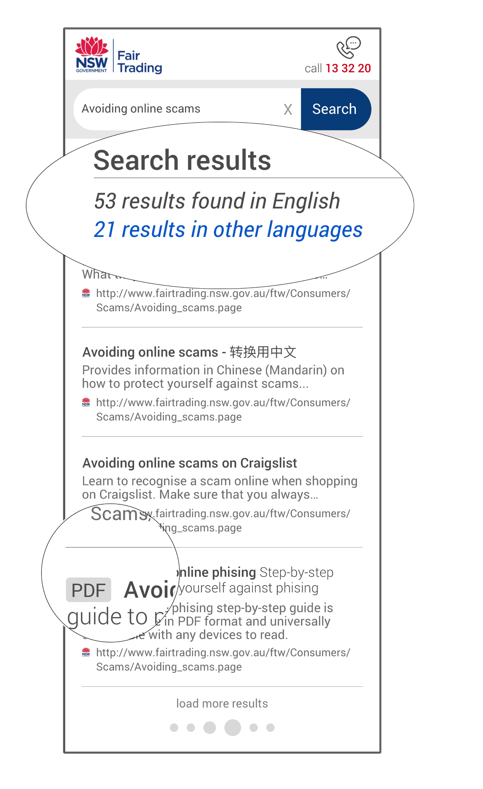
We developed the search bar to accommodate predictive typing and showing quick info on results found in different languages other than English — as NFT also cater to various community languages including Chinese, Arabic and Vietnamese.
While it may not be revolutionary, we learned that users find it helpful when we included the file type visible on the search results (e.g. PDF, images or URLs) allowing quick skim-through.
Don’t make users think (too hard)
An easy to understand navigation is key to a good user experience. Users rely on intuitive digital navigation to locate helpful information and getting a task done. The confusing navigation in the current website led users to either exit in frustration or calling the NFT service centres — something that the NFT is keen to reduce once the site redesign is completed.
So we organised the navigation based on tasks using ‘mega menu’ mechanics and displayed all the subtasks at once. Users should not have to search for hidden navigation menus or try too hard to find the desired page.
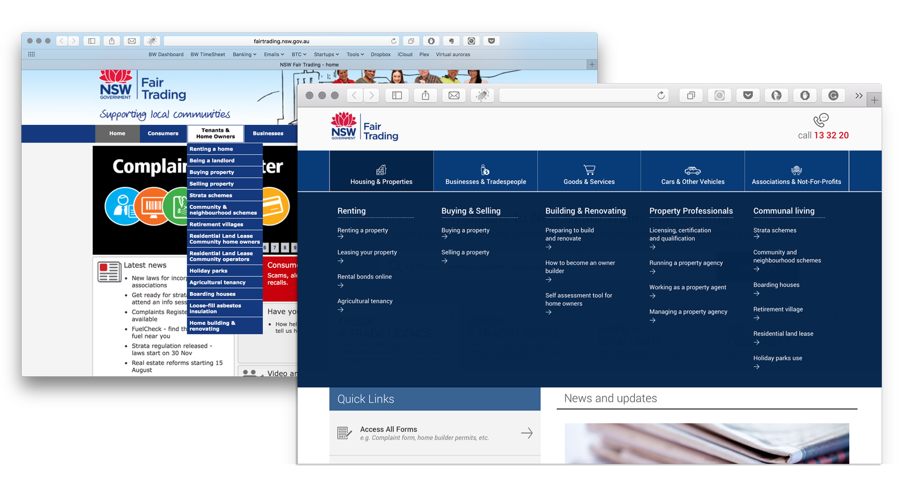
Our research also revealed patterns of frequently visited links on the NFT site across both primary and secondary user archetypes. So we combine this insight with the website analytics, and elevated several key links to the homepage and making them easily visible upon the first visit. As users browse the content page, we intentionally hide particular elements from the header as users scrolls down and only relevant links remain sticky.
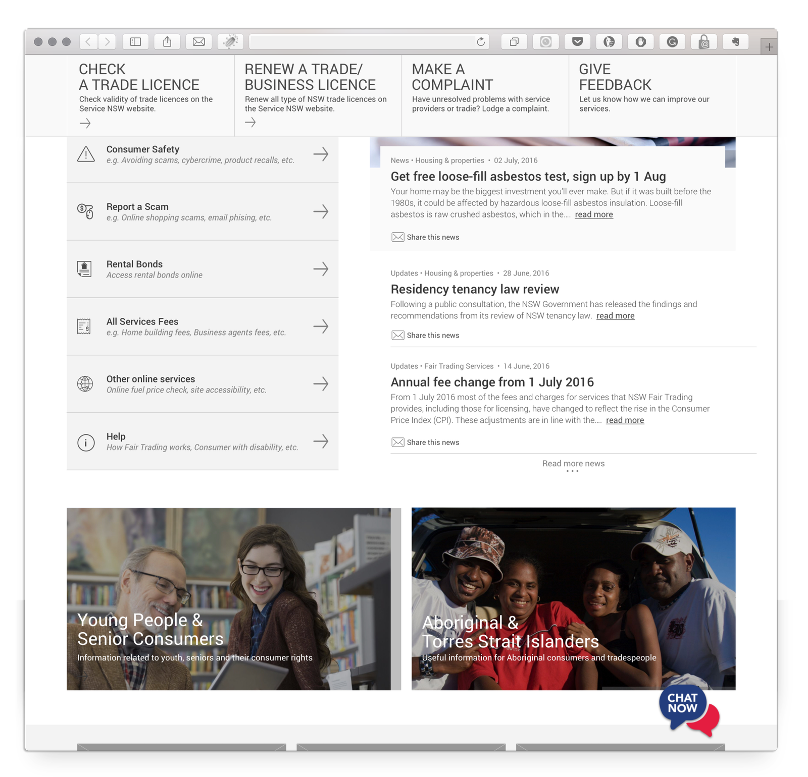
Empowering user to get things done fast
We reduced the sensory overload on the content page by writing the content concisely and organised the information hierarchy according to what’s important when users try to accomplish any particular task — allowing them to proceed with ‘just enough’ information without overwhelming them.
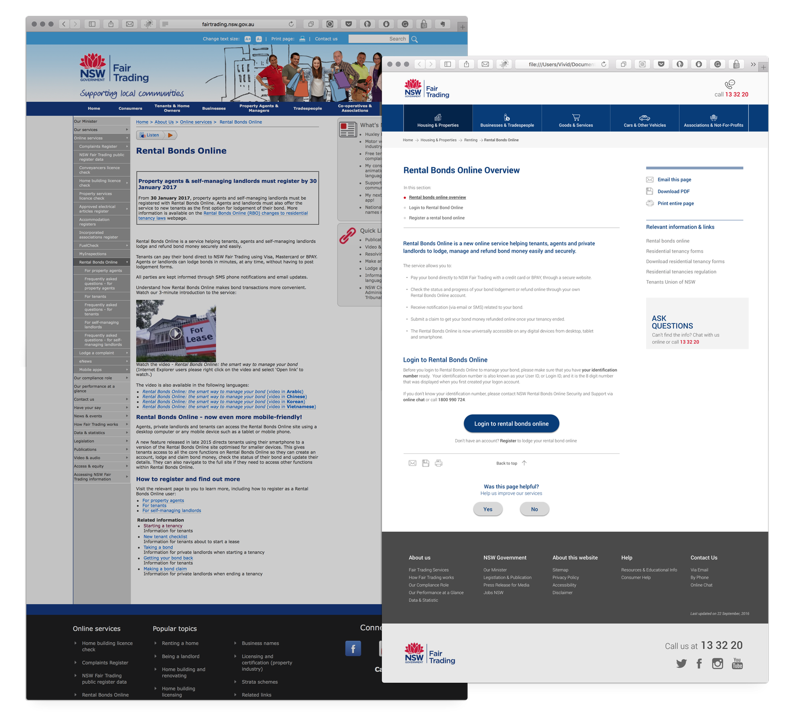
The Outcome
On August 2018, the NSW Fair Trading implemented our design and launched a new and improved website. I reached out to NSW Fair Trading on how much impact the newly designed site has bring, especially from the user experience point of view, and here’s some key statistic:
- In the first six months after the new site was launched, there has been 48% drop in phone calls requesting supports in finding information on the Fair Trading website.
- Over 54% decreased in customers complaints received via email, especially for fact findings task. Customers still sent emails to Fair Trading for case-specific assistance.
- Improved site readability and accessibility for users with visual impairment.
You can visit the live site: https://www.fairtrading.nsw.gov.au
← Back to archive